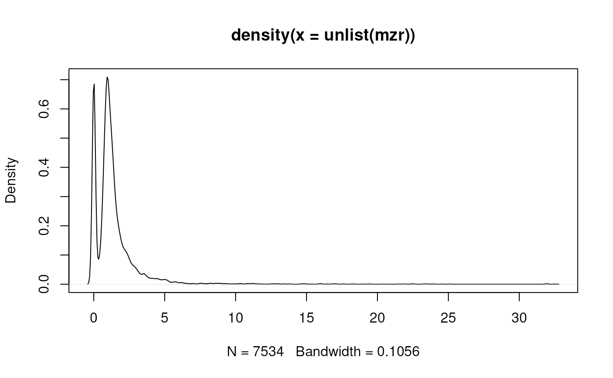

estimateMzResolution.RdestimateMzResolution estimates the m/z resolution of a profile-mode
Spectrum (or of all spectra in an MSnExp or OnDiskMSnExp object.
The m/z resolution is defined as the most frequent difference between a
spectrum's m/z values.
# S4 method for MSnExp estimateMzResolution(object, ...) # S4 method for Spectrum estimateMzResolution(object, ...)
| object | either a |
|---|---|
| ... | currently not used. |
numeric(1) with the m/z resolution. If called on a MSnExp or
OnDiskMSnExp a list of m/z resolutions are returned (one for
each spectrum).
This assumes the data to be in profile mode and does not return meaningful results for centroided data.
The estimated m/z resolution depends on the number of ions detected in a spectrum, as some instrument don't measure (or report) signal if below a certain threshold.
## Load a profile mode example file library(MSnbase) library(msdata) f <- proteomics(full.names = TRUE, pattern = "TMT_Erwinia_1uLSike_Top10HCD_isol2_45stepped_60min_01.mzML.gz") od <- readMSData(f, mode = "onDisk") ## Estimate the m/z resolution on the 3rd spectrum. estimateMzResolution(od[[3]])#> [1] -0.03353908## Estimate the m/z resolution for each spectrum mzr <- estimateMzResolution(od) ## plot the distribution of estimated m/z resolutions. The bimodal ## distribution represents the m/z resolution of the MS1 (first peak) and ## MS2 spectra (second peak). plot(density(unlist(mzr)))